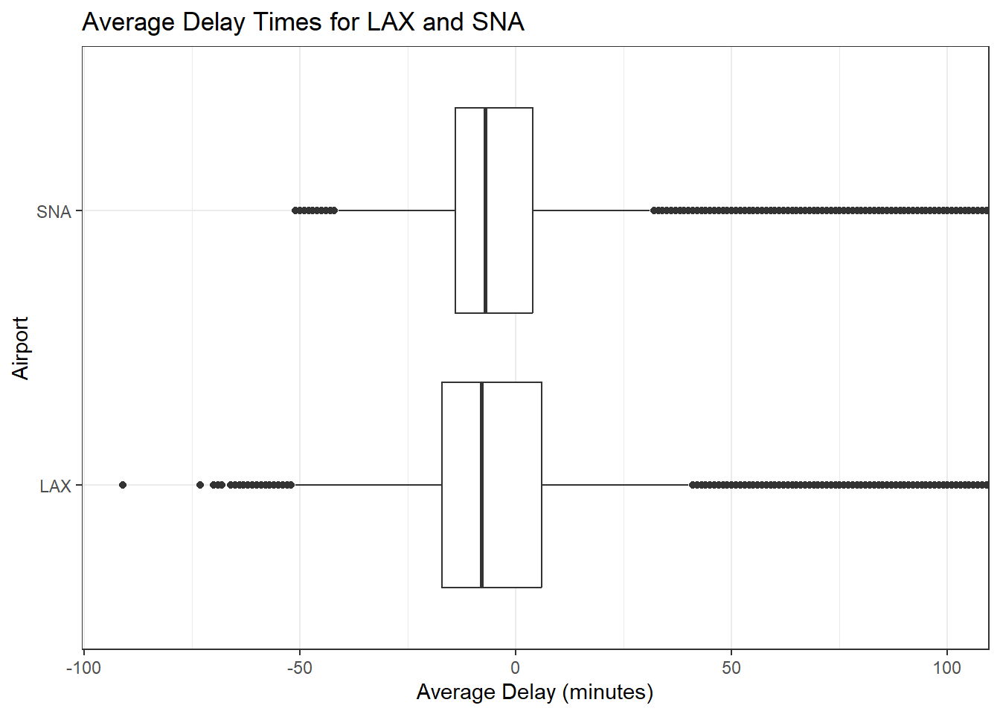
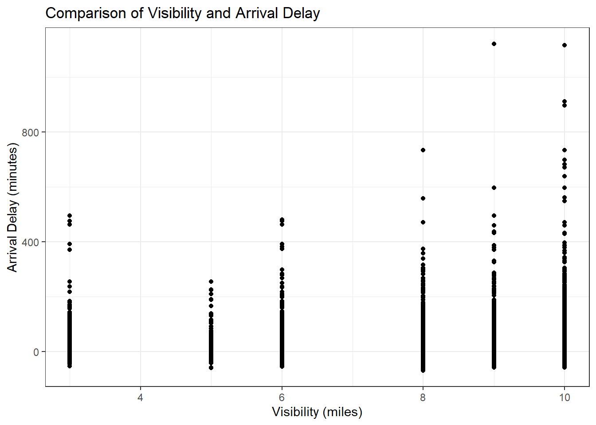

Day 01 Activity: Exploratory Data Analysis
SoCal Data Science Bootcamp Summer 2023
Air Travel Data: The anyflights package
You may recall working on the nycflights13 data. In this activity we will be looking at data specifically from Los Angeles International Airport (LAX) and John Wayne Airport (SNA) in 2019 and 2020. In the data folder you’ll find two types of data files for each year: 1) a flights file, and 2) a weather file.
- Data Description:
flights: all flights that departed a given airport in a given year and monthweather: hourly meteorological data for a given airport in a given year and month
- Data Source: anyflights package
Instructions:
Please answer the following questions as stated. Your answers should include a visual and/or a summary along with a written description of your findings. Work will be done individually, however, you will be encouraged to talk with each other about your ideas. Please make sure you ‘Commit’ and ‘Push’ your changes.
Question 1
Read one dataset from the data folder. Write a question that you would want to answer using one variable from this dataset. Answer your question using various EDA techniques.
Warning: package 'tidyverse' was built under R version 4.2.3Warning: package 'ggplot2' was built under R version 4.2.3Warning: package 'readr' was built under R version 4.2.3Warning: package 'lubridate' was built under R version 4.2.3 mean_value median_value min_value max_value
1 1.938318 -8 -91 2041Question 2
Using the same data set as in question 1 or a new dataset, write a question that you would want to answer using two variables from this dataset. Answer your question using various EDA techniques.
mean_delay median_delay max_delay
1 2.045792 -8 2041 mean_delay median_delay max_delay
1 1.35777 -7 1596
Question 3
Read at least two datasets and join them. Write a question that you would want to answer using two variables from these datasets. Answer your question using various EDA techniques. comparing the visibility variable and the arrival delays
Warning in inner_join(flights, weather, by = c("day", "hour")): Each row in `x` is expected to match at most 1 row in `y`.
ℹ Row 8359 of `x` matches multiple rows.
ℹ If multiple matches are expected, set `multiple = "all"` to silence this
warning.